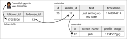

Week 1: Course Overview
DSAN 6000: Big Data and Cloud Computing
Schedule
Today’s Planned Schedule:
| Start | End | Topic | |
|---|---|---|---|
| Lecture | 3:30pm | 4:00pm | Setting the Table (Logistics) → |
| 7:00pm | 7:30pm | Big Data and Clouds: Core Definitions → | |
| 7:30pm | 7:45pm | Demo: Measuring Implementation Efficiency → | |
| 7:30pm | 7:45pm | Key Tools Overview → | |
| Break! | 8:00pm | 8:10pm | |
| 8:10pm | 9:00pm | In-Class Demo: DDLs and DQLs → |
Setting the Table: Course Logistics
Course Webpage
Links to these additional resources are in the sidebar:
- Canvas page
- Google Space
- Instructors email:
dsan6000@georgetown.edu
Jeff Jacobs, jj1088@georgetown.edu
- Background in Computational Social Science (Comp Sci MS → Political Economy PhD → Labor Econ Postdoc)
Fun (Relevant) Facts
- Used Prefect (ETL Framework) daily for PhD projects! (Example)
- Server admin for lab server → lab AWS account at Columbia (2015-2023) → new DSAN server (!) (2025-)
- Passion project 1: Code for Palestine (2015-2022) → YouthCode-Gaza (2023) → Ukraine Ministry of Digital Transformation (2024)
- Passion projects 2+3 [🤓]: web app frameworks
- Sleep disorder means lots of reading – mainly history! – at night
- Also teaching PPOL6805 / DSAN 6750: GIS for Spatial Data Science this semester
Instructional Team: Teaching Assistants
spv15@georgetown.edufw256@georgetown.edusw1430@georgetown.eduEvaluation
- Group project : 40%
- Assignments : 30%
- Lab completions : 20%
- Quizzes : 10%
Communication
- The Google Space is the primary form of communication for general questions
- You can email the instructional team with private questions (e.g., about your AWS allocation) at
dsan6000@georgetown.edu - (But, consider using the Google Space first: most questions last year were issues faced by multiple students!)
In-Class Midterm
- The gist: You will be given specifications for an app/pipeline/infrastructure (hypothetical, but based on real-world!): goals, budgets, etc.
- Your job will be to use what you’ve learned in weeks 1-6 to write out the implementation details of how you would meet these specifications
- Will make more sense by end of lecture today with X.com example
What Makes Data “Big”? Why Do We Need “The Cloud”?
\(\text{Revenue} = f(\text{Tracking}, \text{Analytics})\)
(See TheMarkup.org’s Blacklight Tool or OpenTelemetry for more examples)
| Tracking Level | Example Transaction | → (instant) |
OLTP (Transaction DB) | \(\leadsto\) (nightly) |
OLAP (Analytics) |
|---|---|---|---|---|---|
| HTTP Requests | User \(i\) visited page \(y\) at time \(t\) | → |
|
\(\leadsto\) | “50% more users on weekends” |
| Key Logging | User \(i\) typed letter \(\ell\) into textbox \(y\) at time \(t\) | → |
|
\(\leadsto\) | “On average, users rewrite 20% of email before send” |
| Session Recording | User \(i\)’s mouse was at \((x,y)\) at time \(t\) | → |
|
\(\leadsto\) | “Only 30% of users scroll to ad below fold” |
OLTP Demo
Rick Owens Teaspoon, $99
Last SQL Command:
CREATE TABLE events (
event_id int PRIMARY KEY,
event_type varchar(255),
uid int,
ts timestamp
);| event_id | event_type | uid | ts |
|---|
Apache HTTP Server Log File
On Ubuntu, typically /var/log/apache2/access.log
192.168.1.105 - - [31/Aug/2026:14:22:01 -0400] "GET /index.html HTTP/1.1" 200 5124 "https://www.google.com/" "Mozilla/5.0 (Windows NT 10.0; Win64; x64) AppleWebKit/537.36 (KHTML, like Gecko) Chrome/128.0.0.0 Safari/537.36"
203.0.113.42 - - [31/Aug/2026:14:22:03 -0400] "GET /images/logo.png HTTP/1.1" 200 2341 "https://example.com/index.html" "Mozilla/5.0 (Macintosh; Intel Mac OS X 10_15_7) AppleWebKit/605.1.15 (KHTML, like Gecko) Version/17.4 Safari/605.1.15"
198.51.100.23 - - [31/Aug/2026:14:22:05 -0400] "POST /login HTTP/1.1" 302 0 "https://example.com/login" "Mozilla/5.0 (X11; Linux x86_64) AppleWebKit/537.36 (KHTML, like Gecko) Chrome/127.0.0.0 Safari/537.36"
192.168.1.105 - jj [31/Aug/2026:14:22:06 -0400] "GET /dashboard HTTP/1.1" 200 8842 "https://example.com/login" "Mozilla/5.0 (Windows NT 10.0; Win64; x64) AppleWebKit/537.36 (KHTML, like Gecko) Chrome/128.0.0.0 Safari/537.36"
203.0.113.42 - - [31/Aug/2026:14:22:09 -0400] "GET /api/data?id=452 HTTP/1.1" 404 512 "-" "Mozilla/5.0 (Macintosh; Intel Mac OS X 10_15_7) AppleWebKit/605.1.15 (KHTML, like Gecko) Version/17.4 Safari/605.1.15"
66.249.66.1 - - [31/Aug/2026:14:22:12 -0400] "GET /robots.txt HTTP/1.1" 200 178 "-" "Mozilla/5.0 (compatible; Googlebot/2.1; +http://www.google.com/bot.html)"
198.51.100.23 - - [31/Aug/2026:14:22:15 -0400] "GET /assets/style.css HTTP/1.1" 304 0 "https://example.com/dashboard" "Mozilla/5.0 (X11; Linux x86_64) AppleWebKit/537.36 (KHTML, like Gecko) Chrome/127.0.0.0 Safari/537.36"
10.0.0.5 - - [31/Aug/2026:14:22:19 -0400] "GET /admin HTTP/1.1" 403 291 "-" "curl/8.4.0"
192.168.1.105 - jj [31/Aug/2026:14:22:23 -0400] "GET /favicon.ico HTTP/1.1" 200 894 "https://example.com/dashboard" "Mozilla/5.0 (Windows NT 10.0; Win64; x64) AppleWebKit/537.36 (KHTML, like Gecko) Chrome/128.0.0.0 Safari/537.36"Line
192.168.1.105 -
- [31/Aug/2026:14:22:01 -0400]
"GET /index.html HTTP/1.1"
200 5124
"https://www.google.com/"
"Mozilla/5.0 (Windows NT 10.0; Win64; x64) \
AppleWebKit/537.36 (KHTML, like Gecko) \
Chrome/128.0.0.0 Safari/537.36"Line
192.168.1.105 -
jj [31/Aug/2026:14:22:06 -0400]
"GET /dashboard HTTP/1.1"
200 8842
"https://example.com/login"
"Mozilla/5.0 (Windows NT 10.0; Win64; x64) \
AppleWebKit/537.36 (KHTML, like Gecko) \
Chrome/128.0.0.0 Safari/537.36"Linux System Log File
On Ubuntu, typically /var/log/syslog
Sep 3 20:10:01 myEC2 systemd[1]: Started Session 42 of user root.
Sep 3 20:14:17 myEC2 sshd[203]: Accepted publickey for jj from 203.0.113.42 port 51322 ssh2
Sep 3 20:14:17 myEC2 sshd[203]: unix(sshd:session): session opened for user jj(uid=1001) by (uid=0)
Sep 3 20:14:18 myEC2 systemd-logind[812]: New session 43 of user jj.
Sep 3 20:15:42 myEC2 sudo[310]: jj: PWD=/home/jj; USER=root; COMMAND=/usr/bin/systemctl restart apache2
Sep 3 20:15:43 myEC2 apache2[325]: 2026/08/31 09:15:43 [notice] 19325#19325: signal process started
Sep 3 20:18:33 myEC2 sshd[340]: Failed password for admin from 198.51.100.77 port 44210 ssh2
Sep 3 20:18:35 myEC2 sshd[340]: Failed password for admin from 198.51.100.77 port 44210 ssh2
Sep 3 20:18:37 myEC2 sshd[340]: Connection closed by admin 198.51.100.77 port 44210 [preauth]
Sep 3 20:20:11 myEC2 systemd[1]: mysql.service: Main process exited, code=killed, status=9/KILL
Sep 3 20:20:12 myEC2 systemd[1]: mysql.service: Scheduled restart job, restart counter is at 1.
Sep 3 20:20:12 myEC2 systemd[1]: Started MySQL Community Server.
Sep 3 20:21:00 myEC2 kernel: [2357.4201] Out of memory: Killed process 18122 (java) total-vm:4823012kB
Sep 3 20:23:15 myEC2 systemd-logind[812]: Session 43 logged out. Waiting for processes to exit.
Sep 3 21:00:00 myEC2 CRON[8455]: (root) CMD ( cd / && run-parts --report /etc/cron.daily ))Internet of Things (IoT)
Nearly 100 billion devices generating data:
- Smart home devices (Alexa, Google Home, Apple HomePod)
- Wearables (Apple Watch, Fitbit, Oura rings)
- Vehicles (not just self-driving cars!)
- Industrial sensors
- Smart city infrastructure
- Medical devices, remote patient monitoring

Slide Author: Amit Arora!
Smartphone Location Data

Slide Author: Amit Arora!
Big Data Definition For This Class(!)
Big Data: “When the size of the data itself becomes part of the engineering problem”
| Can be processed on single machine? | No | Medium (Parallel Processing) |
Big! Parallel + Distributed Processing |
| Yes | Small (Your Laptop) |
Medium (Data Streaming) |
|
| Yes | No | ||
| Can be stored on single machine? | |||
Real-World Big Data / AI Examples
Netflix
- Scale: 260+ million subscribers generating 100+ billion events/day
- AI Use: Personalization, content recommendations, thumbnail generation
- Stack: S3 → Spark → Iceberg → ML models → Real-time serving
Uber
- Scale: 35+ million trips per day, petabytes of location data
- AI Use: ETA prediction, surge pricing, driver-rider matching
- Stack: Kafka → Spark Streaming → Feature Store → ML Platform
OpenAI
- Scale: Trillions of tokens for training, millions of queries/day
- AI Use: GPT models, DALL-E, embeddings
- Stack: Distributed training → Vector DBs → Inference clusters
Slide Author: Amit Arora!
Data Architecture / Infrastructure Demo

“The Cloud” = Renting Computers from a Big Company
(…That’s it, that’s the whole definition)
Our Toolbox From Now Until December 😎
- Python
- Apache Arrow
- Apache Hadoop \(\leadsto\) Apache Spark
Our Bookshelf From Now Until December 😎
| Week 2: Cloud Computing | The Boar Book: Kleppmann and Riccomini (2026), Designing Data-Intensive Applications (2nd Edition) |
| Week 3: Parallel Concepts | The Wolohan MapReduce Book: Wolohan (2020), Mastering Large Datasets with Python, Chapters 1-6 |
| Week 4: DuckDB | The SQL Bird Book: Tanimura (2021), SQL for Data Analysis The I-Need-Ham, Hunger Book: Needham, Hunger, and Simons (2024), DuckDB in Action |
| Week 5: Polars | The Lynx Book: Janssens and Nieuwdorp (2025), Python Polars: The Definitive Guide |
| Week 6: Data Engineering | General Data Engineering: Eagar (2021), Data Engineering with AWS Athena: Virtuoso et al. (2021), Serverless Analytics with Amazon Athena |
| Week 7: Hadoop | The Wolohan MapReduce Book: Wolohan (2020), Mastering Large Datasets with Python, Chapters 7-10 |
| Weeks 8-9: Spark | The Electric Eel Book: Damji et al. (2020), Learning Spark |
| Weeks 10-11: ETL, Vector DBs | The Zilliz Course: Zilliz (2025), Introduction to Unstructured Data |
Time for In-Class Demos!
Lab: DDLs vs. DQLs
- DDL: Data Definition Language
- DQL: Data Query Language